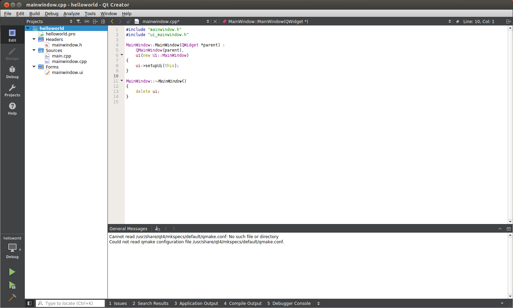
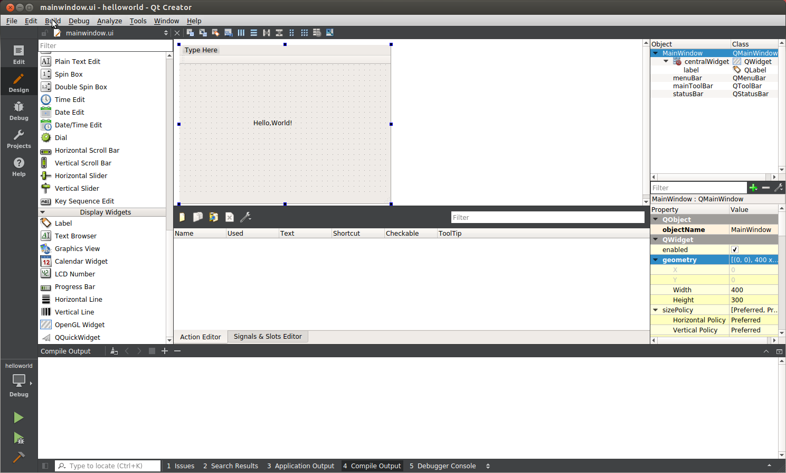
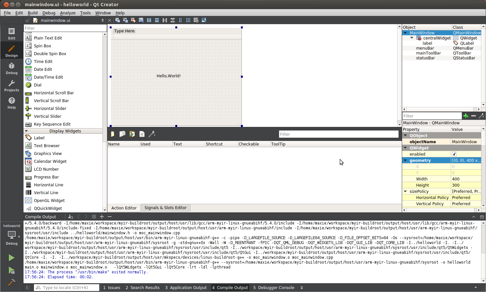

5.3 编译运行QT应用
以下是创建好的helloworld项目截图,左侧是QtCreator创建好的项目目录结构,右侧是代码编辑区。

图5-3-1 项目文件管理窗口
双击左侧的Forms里的mainwindow.ui文件,打开Design视图,从左铡Display Widgets栏目下,拖动Label到中间的区域。双击后,修改内容为Hello,world!。

图5-3-2 可视化界面编辑
完成以上操作后,就可以点击菜单栏Build->Build Project hellowrld,进行项目构建,此时下侧Compile Output会有编译信息输出。若有错误,请根据提示,修改正确后重新构建。

图5-3-3 编译项目
QtCreator 构建 helloworld 项目后,编译好的二进制文件存放在~/build-helloworld-myir_dev_kit-Debug/目录下,可以使用 file 命令查看,是否编译为 ARM 架构。
file helloworld
helloworld: ELF 32-bit LSB executable, ARM, version 1 (GNU/Linux), dynamically linked
(uses shared libs), for GNU/Linux 4.1.0, not stripped
将生成的QT应用程序的可执行文件helloworld拷贝到开发板/usr/bin目录下,并在开发板上执行,如下：
# helloworld --platform linuxfb:fb=/dev/fb0
将会在 LCD 屏幕上看到Hello,World!的 Qt 窗口。

图5-3-4 QT应用程序执行